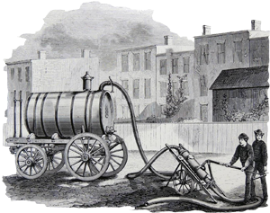

متن نمونه متن نمونه متن نمونه متن نمونه متن نمونه متن نمونه متن نمونه متن نمونه متن نمونه متن نمونه
متن نمونه متن نمونه متن نمونه متن نمونه متن نمونه متن نمونه متن نمونه متن نمونه متن نمونه متن نمونه متن نمونه متن نمونه
متن نمونه متن نمونه متن نمونه متن نمونه متن نمونه متن نمونه
راهنمای هوشمند
شما می توانید با استفاده از راهنمای هوشمند و جواب به سوالات به راه حل مناسب برسید در صورتی که راه حل
مورد ارائه شده مشکل شما را برطرف نکرد، می توانید با کارشناسان ما تماس حاصل کرده و از راهکارهای ما
استفاده کنید یا از سرویس های موجود ما بهره ببرید.

منو راهنمایی کن
لوله بازکنی
بازکردن انواع لوله های فاضلاب،دستشویی ایرانی وفرنگی، پشت بام، سیفون ظرفشویی و روشویی،
کفشور
آشپزخانه، کفشورحمام حیاط و...
هم چنین بازکردن لوله های سیمانی شده ولوله هایی که سخت بازمیشوند توسط نیروی ماهر وبه
روشهای
مختلف
انجام میگیرد.
تخلیه چاه و سینک
تخلیه کردن چاه وسپتیک پرشده بوسیله ی پمپ های پرقدرت لجنکش،مکنده و ساکشن وبا تانکرهای
۶۰۰۰
و۱۲۰۰۰
لیتری صورت میگیرد.
برای جلوگیری ازخطر ریزش چاه لازم است هرچند سال یکبار( بسته به اندازه و عمرچاه) چاه تخلیه
لایروبی
واحیا شود تا ازبروز خطرات جبران ناپذیر جلوگیری شود.
تخلیه چاه این شرکت توسط افراد متخصص وکاربلد بصورت شبانه روزی انجام میگیرد.پاساژها،مدارس،
بیمارستانها،رستورانها،مراکز اداری و... میتوانند برای سهولت کار بطور شبانه ازخدمات تخلیه
چاه
بهره مند
شوند.
حفاری چاه
حفرچاه توسط مقنی باتجربه در متراژهای مختلف همراه باکندن انباری، کول گذاری و طوقه چینی
صورت
میگیرد.
حفر انواع چاه های فاضلاب،چاه ارت، چاه آب بصورت دستی و مکانیزه
قیمت حفاری چاه بستگی به سفتی یا نرمی خاک آن منطقه،عمق چاه،حفرانباری دارد.
تعیین محل مناسب برای حفرچاه یکی ازاصلی ترین نکات است مثلا:چاه رانباید کنار
دیواراصلی،ستون و
یاچاه
دیگر حفرکرد تا از خطرریزش چاه جلوگیری کرد.درمواردی هم که چاه جدیدکنارچاه قدیمی حفرشود
بایدچاه قدیمی
تخلیه ویاحتی پرشود.
ترمیم و احیاء چاه ریزشی
ممکن است چاه فاضلاب براثرگذرزمان ،استفاده نادرست ویاحفر شدن درمحل نامناسب دچارریزش وسقوط
شود
که
دراین مواقع می توان دوباره چاه رااحیاء کول گذاری، وطوقه چینی کردتاچاه دوباره قابل
استفاده
شود.
لوله کشی آب و فاضلاب
ارائه خدمات لوله کشی به شهروندان تهرانی توسط این شرکت.
ارسال لوله کش ماهر به سراسر تهران دراسرع وقت بصورت شبانه روزی وتضمینی.
لوله کشی آب سردوگرم وفاضلاب خانگی
متصل کردن انشعابات لوله های فاضلاب خانگی به فاضلاب مرکزی
نصب پکیج،آبگرمکن،شوفاژ و خدمات مربوط به آن
نصب پمپ آب و لوله کشی آن به تمامی واحدهای ساختمانی
ارائه خدمات لوله کشی بوسیله ی پیشرفته ترین دستگاهها
تعویض کاسه توالت
کفتراشی وکنده کاری کف توالت وتعمیریاتعویض لوله کشی(رفع نم)وعایقکاری وکاشی کاری مجددآن.
تعویض وتبدیل کاسه توالت ایرانی به فرنگی وبرعکس.
تعویض کاسه توالت وکفتراشی وکنده کاری کف توالت
نصب کاسه توالت ایرانی وفرنگی
رفع نم و بوی بد
رفع نم رطوبت وبوی بد ، علت یابی نم ورطوبت وترمیم آن ،رفع نم و رطوبت ناشی از نشت فاضلاب
یا
خراب بودن
توالت، رفع نم و رطوبت ناشی از ترکیدگی لوله آب یا شوفاژ، رفع نم دیواره های حمام و عایق
بندی،
رفع نم
سقف پشت بام
باز و بست کردن درب چاه
مامی توانیم بوسیله ی تجهیزات و دستگاه هایی که در دست داریم چنانچه از محل دقیق چاه
ناآگاهید
محل دقیق
آنراشناسایی کرده و بدون کنده کاری های زیاد درب چاه راباز کرده ودر پایان کار آنرا ببندیم.
تشخیص ترکیدگی لوله و نشت یابی
گاهی لوله از جایی غیرقابل دسترس دچار ترکیدگی میشود که ما میتوانیم بوسیله ی دستگاه تشخیص
محل
دقیق
ترکیدگی راشناسایی و لوله را بدون کنده کاری وخرابی زیاد تعویض یاتعمیرکنیم.
عایق کاری
رفع نم دیواره های حمام و عایق بندی ، دوام و استحکام کافی در مقابل نیروهای محیطی و
مکانیکی،
دارای
خصوصیت مثبت کاربری (حمل و نقل آسان – قیمت مناسب – نگهداری آسان )
کاشی کاری
نصب انواع کاشی وسرامیک وسنگ آنتیک ودکوراتیو که بیشتر روی دیوار tvوسالن هاویا اتاق
مسکونی وتجاری ویا سلیقه مشتریان به دلخواه مورد استفاده قرارمیگیره که طرفداران خاص خود
دارد
نصب کاشی دیوار ونصب سرامیک کف سرویس
نصب کاشی وسرامیک وسنگ انتیک
بازسازی سرویس بهداشتی قدیمی
سیمان کاری
کاربنایی آجر.بلوک.پیش ساخته .سفال.چینی پذیرفته میشود وسیمانکاری در طرح های مختلف .سیمان
کاری
طرح چوب
و ساخت استخر .آبشار و شومینه طرح های مختلف
لوله کشی
ارائه خدمات لوله کشی به شهروندان تهرانی توسط این شرکت.
ارسال لوله کش ماهر به سراسر تهران دراسرع وقت بصورت شبانه روزی وتضمینی.
لوله کشی آب سردوگرم وفاضلاب خانگی
متصل کردن انشعابات لوله های فاضلاب خانگی به فاضلاب مرکزی
نصب پکیج،آبگرمکن،شوفاژ و خدمات مربوط به آن
نصب پمپ آب و لوله کشی آن به تمامی واحدهای ساختمانی
ارائه خدمات لوله کشی بوسیله ی پیشرفته ترین دستگاهها
نصب و تعمیرات آبگرمکن/شوفاژ/پکیج
نصب و تعمیر تخصصی انواع برندهای پکیج و آبگرمکن های دیواری و ایستاده ، شوفاژ.
تعمیر و سرویس پکیج دیواری ایرانی
تعمیر و سرویس پکیج دیواری خارجی
تعمیر و سرویس پکیج شوفاژ زمینی
تعمیرات نصب سرویس نگهداری
کولر
فن کویل
پنکه سقفی و دیواری
شیرآلات
آبگرمکن
پکیج
شوفاژ (رادیاتور)
پمپ فشار آب ساختمان
فیلتر تصفیه آب
سرویس و نصب کولر آبی
عمیر و تعویض دینام کولرآبی ، تعویض پوشال کولر آبی، تعویض کفی (رفع پوسیدگی بدنه) کولر آبی
،
تعمیر و
تعویض پمپ آب کولر آبی، رفع اتصالی برق و سیم کشی کولر آبی ، تعویض یاتاقان و فولی و…..،
نصب
برزنت ،
جوشکاری پایه ، کانال سازی
لوله بازکنی
بازکردن انواع لوله های فاضلاب،دستشویی ایرانی وفرنگی، پشت بام، سیفون ظرفشویی و روشویی،
کفشور
آشپزخانه، کفشورحمام حیاط و...
هم چنین بازکردن لوله های سیمانی شده ولوله هایی که سخت بازمیشوند توسط نیروی ماهر وبه
روشهای
مختلف
انجام میگیرد.


❯
❮

خدمات تخلیه چاه:
تخلیه کردن چاه وسپتیک پرشده بوسیله ی پمپ های پرقدرت لجنکش،مکنده و ساکشن وبا تانکرهای ۶۰۰۰ و۱۲۰۰۰
لیتری صورت میگیرد.
باز وبست کردن درب چاه:
مامی توانیم بوسیله ی تجهیزات و دستگاه هایی که در دست داریم چنانچه از محل دقیق چاه ناآگاهید محل دقیق آنراشناسایی کرده و بدون کنده کاری های زیاد درب چاه راباز کرده ودر پایان کار آنرا ببندیم.
علایم پرشدن چاه:
۱- بالازدن آب ازپایین ترین بخش ساختمان مثلا کفشور پارکینگ یا آشپزخانه زیرزمین یاهمکف
۲- ظاهرشدن حشرات موذی مثل سوسک در اطراف چاه
۳- خیس شدن یانم برداشتن دیوار نزدیک به چاه
۴- پخش شدن بوی بد از اطراف چاه
در اینگونه مواقع تنهابایک تماس در کمترین زمان نیروی تخلیه چاه ازنزدیک ترین شعبه به محل فرستاده میشود.
باز وبست کردن درب چاه:
مامی توانیم بوسیله ی تجهیزات و دستگاه هایی که در دست داریم چنانچه از محل دقیق چاه ناآگاهید محل دقیق آنراشناسایی کرده و بدون کنده کاری های زیاد درب چاه راباز کرده ودر پایان کار آنرا ببندیم.
علایم پرشدن چاه:
۱- بالازدن آب ازپایین ترین بخش ساختمان مثلا کفشور پارکینگ یا آشپزخانه زیرزمین یاهمکف
۲- ظاهرشدن حشرات موذی مثل سوسک در اطراف چاه
۳- خیس شدن یانم برداشتن دیوار نزدیک به چاه
۴- پخش شدن بوی بد از اطراف چاه
در اینگونه مواقع تنهابایک تماس در کمترین زمان نیروی تخلیه چاه ازنزدیک ترین شعبه به محل فرستاده میشود.
شماره تلفن بی واسطه شبانه روزی:
09124351571
توجه!!
جوهرنمک ، اسیدها و مواد شیمیایی لوله بازکن نه تنهاباعث باز شدن لوله نمیشوند بلکه باعث ازبین رفتن
اتصالات لوله میشوند.
بهترین کیفیت
ما با تجربه و ابزار مناسب و به همراه نیروی زبده بالاترین و بهترین کیفیت ممکن را به مشتریان
عزیز خود ارائه داده و اعتقاد ما بر این است که هیچ گاه نباید کیفیت کار را فدای هر چیز دیگری
کرد.
کپن تخفیف
بعد از استفاده از خدمات ما میتوانید برای استفاده های بعدی کپن تخفیف دریافت کرده و از آن برای
خود یا فرد دیگری بهره ببرید.
09124351571
پوشش سراسری
خدمات این مجموعه به صورت شبانه روزی و حرفه ای بوده و در کلیه مناطق تهران بزرگ و توابع پوشش
سراسری دارد و شما در هر منظقه و محله ای که هستید میتوانید در کمترین زمان از خدمات ما بهره
ببرید.